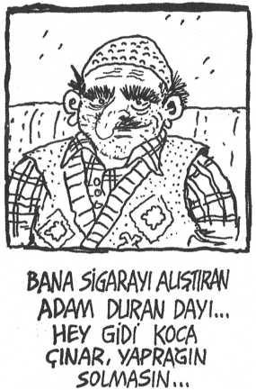

KAPTAN FLIG MORTGAGE’ÎN MEKTUPLARI
27. Gün
“Sevgili İlsa,
Bugün yolculuğumuzun 27. günü. Bir yandan dalgalarla, bir yandan da gemiyi saran salgın hastalıkla boğuşuyorum. Yolculuğumuz oldukça çetin geçiyor. Adamlarım huysuzlanmaya başladı. Oldukça az peksimetimiz ve bir kaç testi şarabımız kaldı. Yalnız kaldıkça odama geçip İncil okuyorum. Sen ve minik oğlumuz Caşua için dua ediyorum. Şirketin tahsis ettiği tayfa, oldukça cahil ve deneyimsiz. Gemide bir tek gemimize yanlışlıkla binen şaşkın Profesör Bay Irvin Silverstone ile konuşabiliyorum. Tamsan çok seversin, oldukça kültürlü bir insan. Onunla edebiyattan, şiirden, siyasetten konuşabiliyorum, ah şu sakarlığı da olmasa... Sana fırsat buldukça yazarım, Caş’ı benim için öp ve bekle. beni karıcığım.”
30. Gün
“Sevgili karıcığım İlsa
Bugün oldukça üzgünüm, adamlarımdan ,3’ünü kaybettim. Neyse ki daha önceden adamları ma'kina dairesinde bir odada karantinaya almıştık da hastalık daha fazla yayılmadı. Ama hala gıda sıkıntısı çekiyoruz, üstelik içme suyumuz da azaldı. Günde bir öğün yemek yiyoruz. Profesör un hesaplarına göre 8 gün sonra yeni kıtaya çıkacakmışız. Bu sevindirici haberi tayfalara verdiğimde moraller biraz düzeldi neyse ki. Yine de bir grup, hala memnuniyetsiz. Yazmaya devam edeceğim. Seni seviyorum. Caş’ı öp.”
45. Gün
“Canım İlsa,
Hala yeni kıtaya ulaşamadık. Profesör iki gündür benle yüzyüze gelmekten kaçıyor. Geçen yakaladım, “Nooldu hani yeni kıtaya ayak basacaktık, haftalar oldu. Tayfalar sorup duruyor” dedim. “Abi ben sana öylesine söylemiştim, hatta büyük konuşmiyim diye eklediğimi de çok iyi hatırlıyorum, hemen gidip herkese yaymışsın. Ben ne yapabilirim?” dedi sırıtarak. “Deniz suyunu Terkos suyuna çevirmeye çalışarak, içme suyu elde etmek için çalışmalara başladım” dedi, “böylelikle içme suyu sıkıntımız kalmayacak,” diye de ekledi. Tayfaların gözünde bütün saygınlığımı yitirdim. Sık sık odama kapanıp İncil okuyorum. Seni ve Caş’ı çok özledim.”
52. Gün
“Canım karıcığım,
Hala yol alıyoruz. Profesör, nerden bulduysa fesli cepkenli bir maymun edinmiş. Omzunda gezdiriyor, keyfine diyecek yok, tayfalarla şakalaşıyor filan. Maymunu alınca omza, birden bire geminin ilgi odağı oldu. İyiden iyiye uyuz oluyorum. Geçen geldi yeni bir hesap yaptım, tam yol gidersek 5 güne kalmaz karadayız, dedi. He he, diyip geçiştirdim. Bu arada gidip gelip ambara bakıyorum. Peksimet ve şarap çok azaldı, profesör ise “deniz suyunu dönüştürdüm ama kuyu suyu oldu içmeyin,” dedi. Tanrı yardımcımız olsun”
64. Gün
“Sevgili İlsa,
Profesörün maymununu dövdüm. Şapkamı alıp kaçırıyordu sürekli. Bir gün yine çalıp yelken direğine tırmandı, hırs yaptım, çıkarıp ayakkabıları direğe çıktım, orda dövdüm. Kuyruğundan tutup denize atacaktım, profesör aşağıdan “Bırak yoksa ayakkabılarını denize atarım” dedi, indim aşşağı, “Ne diyon” dedim, “Asıl sen ne diyon” dedi, itiştik biraz. Maymun yanımıza geldi, ayırmaya çalıştı bizi, o arbedede maymuna bir tokat attım. Profesör de ayakkabımın birini denize attı. Deliye dönünce ikisini birden önüme katıp kovaladım. El ele tutuşup kaçtılar, yakalayamayınca annesine küfür ettim profesörün. Durdu, uzun bir sessizlik oldu. Tayfalara dönüp, “haJ ketti ama” dedim. Hepsi sustu. En yaşlılarından biri olan Nat Gibson yanıma gelip “abi geçen ağlayarak anlattı, annesi yolculuktan önce ölmüş onun. Ayıp ettin.” diye kınadı beni. Bana akıl vermeyin, herkes işine baksın, iskele alabanda, yelkenler fora, vira vira dalgalandı dünya diye aklımdaki bütün denizcilik terimleriyle sağa sola talimatlar verdim, bağıra çağıra odama kapandım, İncil okudum. Kimse benimle konuşmuyor. Caş nasıl, okula başladı mı?”
72. Gün
Canım İlsa,
Ayakkabımın teki yerine diğer ayağıma 4 kat çorap giyiyorum, bu gemi de oldukça yalnız hissediyorum kendimi. Açlık ve susuzluk ise dayanılacak gibi değil. Geçen gün profesörden özür dilemek için kamarasına gittim. Suratını hemen çevirdi. Yapmış olduğum kabalıktan dolayı özür diledim, yüzüme bile bakmıyordu. Beni affetmesi için yalvardım. Sırtı dönük “Tamam affettim” dedi. Ama sesi boğuk çıkıyordu. Kıllandım, suratını tutup çevirdim, ağzındaki lokmayı yutmaya çalışıyordu. “Ulan biz ajlıktan kırılıyoruz, sen bütün peksimeti yiyorsun” diyerek omuzlarından silkeledim. Abi bende gastrit var, midemin suyunu alsın diye yedim, canın çektiyse al bi diş, getirecektim zaten sana da, diye kıvırmaya çalıştı ama dayağı yemekten kurtulamadı. Maymun ise bana yaranmak için beraber dövüyordu.
87. Gün
Canım,
Bugün yeni kıtaya ayak basışımızın ilk günü. Bizi nelerin beklediğini bilmediğimiz için, önden ben, profesör, maymun ve beş silahlı adam sandalla keşif için çıktık. Oldukça yeşil olan kıtayı anlatamam. Hiç görmediğimiz hayvanlar ve bitkiler var. Yeni Kıta’da insanların olduğunu duymuştuk ama ayak bastığımız bölgede var mı bilmiyorum. Tedirginim ve seni özlüyorum sevgili karıcığım. Caş’ı benim için öp.
87. Güne Ek...
Sevgili İlsa, canım karım,
Yeni kıtaya ayak bastığımız bugün hepimiz oldukça korkuyorduk. Profesör ise eski sakar, şapşal halini terketmiş vakur ve kararlıydı, profesörün sevimli maymunundan ise sanırım bahsetmeme gerek yok, kendisi her zamanki gibi neşeliydi. Uzun süren aç ve susuz yolculuktan olsa gerek ben ve 5 silahlı adamım hemen su ve daha önce hiç görmediğimiz türlü meyvelere saldırmak için koştuğumuzda profesör bizi durdurdu. Suyun ve meyvelerin zehirli olabileceği konusunda uyardı bizi. Mümkünse emin olmadığımız sürece bu meyveleri yemememizi, suyu ise içmememizi önerdi. Çaresiz bu öneriyi kabul ettik. Kumsalı keşfe başladık. Keşif dediysem mal gibi yürüdük kumsalda, bir 20 metre açıkta demirlemiş gemimizin güvertesine dizilmiş bizi izleyen mürettebata ıslık çaldık hareket çektik filan... Yaklaşık 6 saat sonra ekip huysuzlanmaya başladı. Profesöre yaklaşıp “Profesör antiparantez bir şey sorucam; yani meyvelerin zehirli olup olmadığından ne zaman emin olacaz” dedim, “Haa yiyebiliriz ya zehirli değiller” dedi umursamadan, “aman profesör herhangi bir işlem, deney yapmayacak mısınız meyveler üzerinde” dedim. “Yok yaa gerek yok, yenilir bunlar, sonuçta bahçe zebzesi. Hem okyanus havası onun zehrini kırıyordur. Hadi yiyelim” dedi. Evet, sevgili İlsa, Yeni Kıtada ilk dayağımı o gün attım. Meğersem profesör kendisinin tokluğunun geçmesi için o kadar bekletmiş bizi aç susuz. Meyveleri ondan önce yememizi istememiş kıskanç. Karnımızı doyurduktan sonra, su ve meyve yükleyip, gemide bizi bekleyen mürettebata götürmek için hareket etmek istedik ama rehavetten olacak, orada sızıp kalmışız. Seni ve sevimli oğlumuz Caş’ı çok özledim, ne olur benim için Caş’ı öp.
88. Gün
Sabah uyanır uyanmaz, silahlarımızın bakımını yaptık. Zira bugün ormanı keşfe gidecektik. Ben elime pala alıp ağaçlan keserek yol açıyordum, profesör ise bok püsür ne bulduysa incelerim sonra diye kavanoza arıyordu. Adamlarımdan birinin bağırtısıyla irkildim. “Anneziğim! Yılan!! Yılan!! Anneziğimm ” diye bağırdı, o kulakları tırmalayan İrlanda aksamyla genç Zak! Hemen çorabını çıkarıp ayağını emdim. Yara kanamıyordu, kanatmak için emdikçe emdim. “Kaptan durun o emdiğiniz midye kesiği. Yilan sokmadı kaçtı. Aha bu kadar bi yılandı. Kocamandı, hiç o kadar büyüğünü görmemiştim” diye uyardı beni Zak. Tükürüp, çorabını giydirdim, daha demin keriz gibi sapasağlam ayağı emdiğim unutulsun diye “Vallahi mi lan, nereye gitti, çok büyük müydü” diye bi sürü soru sorarak, laf kalabalığı yaptım, muhabbeti “yılana odakladım. Zak da “aha orda, vallahi orda” diyerek yılanı gösterdi. Tüfeklerin dipçikleriyle yılanı ezmeye çalışa çalışa, takribi Zincirlikuyu- Beşiktaş mesafesi kadar bi yolu ilerleyerek yılan kovaladık. Yolun sonunda kafamızı kaldırdığımızda karşımızda mızrakları ve okları bize çevrilmiş binlerce yerli gördük. Caş’a sıkı sıkı sarıl ve benim için dua et canım.
92. Gün
Canım ilsa,
Yerliler çok iyiliksever. Reisleri bizi bir esir gibi değil, adeta birer konuk gibi karşıladı. Sürekli o çok merak ettiği, yaşlı kıtamız hakkında sorular soruyor. Ben ve profesör ise elimizden geldiğince cevaplamaya çalışıyoruz bu yaşlı adamı. Geçen geldi “ İrlanda’da kızlar kutuyu 14’ten sonra açtırıyor- muş, öyle duydum.” dedi, bozuldum. “Aman dayı naaptın sen!” diye kibarca reddettim bu önyargıyı. “Kim dedi” diye sordum, isim vermek istemedi ama profesörün söylediğini anladım. Lavuk, reise yaranmak için yapmadığı yok. Ateş suyu, demir at filan diyor koskoca profesör. Reis de ona büyük bilge adam diyor. Hayır, kıskandığımdan değil de çirkin bir durum. Benim adım ise Tomakhontas. Yerli dilinde “aşkısı” demekmiş. Reis çok acaip bi adam, peki Caş nasıl?
95. Gün
İlsa,
Bugün adamlarımdan bir tanesi geldi. “Kaptan yerlilerle dostluk maçı yapalım” diye düşündük dedi, karma takımlar oluşturalım. Kaynaşma olur” dedi. Hayhay dedim. Hem biraz kilo veririz diye de ekledim. Takımlar kuruldu, yalnız yerliler futbol konusunda tecrübesiz olduğu için, adam eksiği çıktı. Reise gittik “Oynar mısın” dedik. “Ayakkabı bulun oynayayım” dedi. Adamlarımdan birinin kramponlarını verdik. Maça başladık. Başlarda takımda olmasına üzüldüğüm profesörün maymunu çok sıkı topçu çıktı. Sahada ayak basmadık yer bırakmıyordu, fakat biraz egoluydu, her topu ayağıma aldığımda “benle oyna” dercesine hareketler yapıyordu. Reis ise berbattı. Neyse ki yalaka profesör, “Ben reisleyim hepiniz teksiniz” diye gazla karışık reisi takıma almıştı. Reis futboldan zerre anlamadığı için benim çektiğim bir şut kaleciden dönünce yere eğilip eliyle tuttu. Bizim takımdan olan Zak “Hop hop! El var” diye bağırarak oyunu durdurdu. Reis “Ne eli lan kaleciyim ben” diye itiraz etti. Reisin bu çirkefliği karşısında büyük bir suskunluk yaşandı. “Kaleci benim diye bağırdım oğlum daha demin, duymadınız mı” diye devam etti rezilliğine. “Doğru lan bağırdı daha demin, ben duydum” diye seslendim. “Adamın diyo oğlum, adamın diyo” diyerek Zak’ın elinden aldı topu reis, degaj çekti. Top ormana kaçtı. Maymunu yolladık. Bir onbeş dakka sonra ormandan bir silah sesi geldi. Caş’ın dersleri nasıl İlsa, onu nasıl özledim bilemezsin... Öpme artık çocuğu, sal gitsin.
95. Güne ek...
Gördüğümüz manzara gerçekten korkunçtu. Kucaklarında ölü maymunla, gemide unuttuğumuz mürettebat gelmişti. “Nerdesiniz lan siz şerefsizler? Kuruduk kaldık beklemekten” diye haykırdı biri. Sonra rastgele ateş etmeye başladı. Bütün kabile kaçmaya başladık. Reiste krampon olduğu için hızlı koşuyordu. Maçta onu koruduğum için kramponun tekini çıkarıp bana verdi. Beraber en önden koşmaya başladık. Silah sesleri kesilince ormandan geri döndük, kabileyle arayı açtığımız için ne oldu, ne bitti bilemiyorduk. Gittiğimizde mürettebatın siniri geçmişti. Yeniden barışçıl bir ortam oluşmuştu. Yeni konukların şerefine yemekler yeniliyor, danslar ediliyordu. Yalnız, profesör de dahil, herkes bize uyuz oldu çok hızlı kaçtık diye. “Yardım çağırmak için önden önden kaçtık” desek de inandıramadık kimseyi.
97. Gün
Canım ilsa,
Bizle kimse konuşmuyor. Devrik bir reis ve ben... Günlerce muhabbet ediyoruz birbirimizle. Bugün en sonunda beklediğim çıkına teklifini reisten aldım. Kibarca reddettim. Abi sen şimdi psi- kolojikman zor bir dönem geçiriyorsun, ond andır lütfen saçmalama dedim. Haklısın bir an boş bulundum ve sen hep yanımdaydın zor zamanlarımda... Anlıyorsun di mi... şey... kimseye söylemezsin dimi, dedi gözleri yaşlı yaşlı. Gel buraya koca aptal dedim... sıkı sıkı sarıldım. En yakın sürede yanma gelmeyi umut ediyorum karıcığım. Öpme demiştim ama Caş’ı ne olur öp benim için.
97. Güne ek
Sevgili karıcığım İlsa,
Dediğim gibi Reis ve benimle kimse konuşmuyor. Yemekten sonra oturup milletin suratını çekeceğimize, sahile gittik, denize taş attık filan. Sonra uzanıp, Ay’ı izledik. Apansız bir sigara yaktı koca reis. “Kabilesi batsın, çekip gidicem şerefsizim buralardan. Jaguar kovalar, ben yetişirim; timsah saldırır, ben koşarım; boğa yılanı tıslar, ben kurtarırım, yine de yaranamıyorum görüyorsun” dedi. “Abi boğa değil, boa! boa!” diye araya girdim. “Tamam, oğlum ben ne dedim? Boğa işte” dedi, “Neyse abi devam et” dedim. “İşte görüyorsun Mortgage, yine de yaranamıyorum, bazen diyorum “Oğlum reis, değmez şu rezilliğe, atla bir gemiye çek git buralardan, neresi olursa, yıldım resmen Mortgage” diye döktü içini. Hiçbir şey diyemedim, o gün baya mutsuz bir gündü. Hatta vurulduğunu zannettiğimiz profesörün maymunu bile elinde topla yanımıza gelince sevinemedik. Üzgünce “Peki vurulan hangi maymundu” diye sorduk maymuna. Bilmiyorum ben topu aramaya gitmiştim, der gibi hareketler yaptı. Bu halini küçük oğlumuz Caş’a benzettim. Canım Caş, öp onu benim için.
101. Gün
Canım İlsa.
Bu topraklarda geçirdiğim her gün adeta ız- dırap benim için. Reis suskun, maymun keyifsiz, profesör gamsız. Adamlarım beni dinlemiyor artık. Hergün sahile gidip açıktaki gemime bakıyorum uzun uzun. Yanına gelmek istiyorum artık. Sen yokken içtiğim tropik içkinin, yediğim ananasın tadı yok. Bugün karar verdim, reisi alıp yanınıza gelicem.
107. Gün
Balım,
Bugün reisle beraber yeni kıtadan ayrılmamızın beşinci günü. Keriz gibi iki kişi yola çıktık. Reis hiçbir işten anlamıyor. Anlamadığı gibi sıla hasretini bahane ederek iş buyurmamı engelliyor, sürekli bir depresyon havasında. Her işe ben koşuyorum, geçen “İki dakka şu dümeni tut da etin suyunu sıkıp geleyim” dedim, ben işeyip gelene kadar geminin rotasını ters çevirmiş, ben de fark etmedim, ters istikamette geri gitmişiz, bir gün sonra karşıdaki adada (yani yeni kıtada) bize gülen mürettebatı ve kabileyi görünce bozuntuya vermeden sanki cüzdanı unutmuşum da onun için geri dönmüşüz gibi yaptım. O kadar anlattım, “Hayır para önemli değil de kimliklerin gitmesine üzüldüğüm için” diye ama kimse inanmadı. Yeniden yola çıktık. Daha yola çıkalı 5 gün olmuştu ki ambardaki bütün muzu bitirmiş reis, hayvan gibi saldırmış, elmalarla birkaç çürük portakal kalmış sadece. Nedendir bilinmez bu davranışı küçük oğlumuz Caş’ı hatırlattı bana. Benim için Caş’a bir muz al, içimden geldi.
110. Gün
Canım İlsa,
Bugün ambara indiğimde gemide iki kaçak buldum. Profesör ve maymunu. Yalandan kızsam da onları tekrar gördüğüme ne kadar sevindim bilemezsin. Zira reisin pis geyiğinden ve işe yaramazlığından çok tiksinmiştim. Arada bir dümeni emanet edecek adam var artık gemide en azından. Ama yiyeceğimiz kısıtlı.
112. Gün
Sevgili İlsa,
Geçen gün reis geldi, “Ohh kaptan senin keyif de keka haa... Yalandan tut dümeni güverteyi biz temizleyelim, sintine suyunu biz boşaltalım, iyi yere kurdun tezgahı. Bizim gibi kerizleri buldun, çalıştır bakalım” diye zart zurt yaptı. “Oğlum manyak mısın lan kaptanım ben. Bilip bilmeden konuşma” diye uyardım. Ne var lan ben de tutarım ver dümeni, diye dümeni elimden almaya çalıştı, o arbedede dümen yerinden çıktı. O sinirle bi tane vurdum, “Kızılderili hakları” diye bağırıp, ağlayarak kaçtı. Dümeni geri taktım. Gitmiş profesörle maymuna sanki ben ırkçıymışım gibi anlatmış. Onları da gazlamış. Alttan aldım. Sonuçta herkes mutlu olsun diye dönüşümlü görevde karar kıldık. Ama bir şartla, eşli batak oynayarak kimin kaptan ve yaveri olacağına karar verecektik.
119. Gün
Canım İlsa,
Bir haftadır tabiri caizse maymun ve reis eşli batakta elimize veriyor. Tabela ağlıyor, profesör ağlıyor, ben ağlıyorum. Gemiyi maymuna, reise teslim ettik, ne oluyor nereye gidiyoruz haberim yok. Kaptan nasıl gidiyoruz, ne zamana varırız, diye soruyorum reise. Sen sıkma canını akşam gelin de küsküyü elinize verelim, diyor. Bir laubalilik hakim kaptan köşküne. Beni bilirsin İlsa, işten kaçmam. Ama maymun gelip, şurayı eni konu bi temizleyin, beğenmedim yaptığınız temizliği gibi hareketler yapınca tepem attı. Tam elimi kaldırıp, denizcilikteki en büyük suç olan kaptana el kaldırmayı yapacaktım ki, karaya oturduk. Direğe tırmanıp, dürbünle baktım kara görünüyordu. Ama karşımdaki yer hiç İrlanda’ya benzemiyordu. Boston’daydık. Boston Sahil Güvenliği gemiyi bağladı. Eyalet yasaları gereği gemimize el kondu. Beş parasız kalakaldık Boston sokaklarında. Caş’a ve sana çok ihtiyacım var.
125. Gün
Canım,
Son bir hafta oldukça sefil geçti. Bir çayla 4 kişi, 8 saat bir çay bahçesinde oturduğumuzu bilirim. Hiç paramız yok. Garsonlar kovunca başka çay bahçesine gidiyoruz. Boston’da ne çalışabileceğimiz bir gemi ne de yapabileceğimiz bir iş bulabildik. Bugünlerde birçok koloni Virjinya’ya gidiyor. Orada pamuk tarlaları varmış. Belki sonunda kendimize ait bir çiftliğimiz olur kaptan, dedi reis. Şansımızı bir de Virjinya’da deneyeceğiz. Herkesin bir hayali var. Benim hayalim ise sana ve oğlumuz Caş’a kavuşmak. Caş’ı benim için öp...
150. Gün
Sevgili İlsa,
Profesör, reis ve tabi ki reisin ele avuca sığmaz maymunu ile Virjinya’ya doğru ilerliyoruz. Karada yolculuk yapmak denizdekinden daha zor. Yolculuk uzun ve engebeli... Eskiden Kaliforniya’da yıllarca maden aramış ve bulamamış yaşlı Gas, en az Gas kadar yaşlı atının çektiği arabasıyla birlikte Virjinya’ya gitmemizi kabul etti. Aksi ama bir o kadar da iyi yürekli bu adamla oldukça iyi anlaştık. Gece yolculuk edemediğimiz için diğer arabalarla beraber mola veriyoruz. Ateş yakıp, fasulye yiyip, kahve içiyoruz. Yemekten sonra sigaralarımızı tüttürürken yaşlı Gas’ın maden anılarını dinliyoruz. Sonra Gas bize banjo çalıyor. Apansız bir türkü patlatıyor profesör, şaşkınlıkla bakıyoruz. Hiç bilmediğimiz bir yere ait, hiç bilmediğimiz bir dilde çok acıklı bir türkü bu. Türkü bitiminde aralıksız tempolu şekilde alkış tutarak, hep beraber söylenen başka bir türküye geçiyoruz. Maymun çift mendil ile atıyor kendisini çemberin ortasına, kartal gibi aça aça kollarını dizini kırıyor, eğile büküle dansını icra ediyor. Ortam şenleniyor. Herkes mutlu, ben seni ve oğlumuz Caşua’yı düşünüyorum. Buruk bir gülümseyiş dudaklarımda... Sıkı sıkı sarıl yavrumuza ve benim için öp.
157. Gün
Canım İlsa,
Bereketli topraklara nihayet vardık. Ama ne yazık ki söylendiği gibi burada herkese toprak dağıtılmıyor. Her yer kapılmış. Bir umudun peşinden boş yere gelmişiz. Her yerde çiftlik sahipleri var, kölelik serbest olduğu için işçi fiyatları da oldukça düşük. Ayrıca bizden önce gelen işçiler çiftlik sahiplerinin ödediği düşük ücretlerin daha da düşmesini istemedikleri için gelmemizi istemiyorlar. “İşçilerimin istemediği adamı ben hiç istemem,” diyen çiftlik sahipleri de bizim gelmemizden pek hoşnut değil. Biz göçmenler, arabalarımızı bir tepenin yamacına bıraktık. Geçen gün, “Bize doğru yaklaşan 4 atlı var” dedi profesör. Atlılar silahlıydı. Arabaların etrafında dönüp, yaşlılara ve çocuklara korku saldılar. İçlerinden biri, “Geldiğiniz yere dönün göçmenler, burada size ne iş ne de yemek var. Umarım Bay Fitzcırılt’ın çiftliğinde yok yere asılan zenciden haberiniz vardır” diye tehdit etti. Yaşlı Gas, uyukladığı arabasından çıktı ve “Bak evlat yıllardır kendime ait bir avuç toprağın hayaliyle yaşadım ve onu almadan gideceğimi hiç sanmıyorum. Kutsal İsa adına! Doğudan geldik, günlerce ızdıraplar çektik ve şimdi bize çekip gitmemizi söylüyorsunuz. Sizin ne yapacağınızı bilmiyorum ama ben o toprağı alıp içine küçük bir ev yapacağım ve kalan ömrümü Bayan Yupırkanırt’ın (bayana dönüp şapkasını kaldırarak selamladı) yaptığı yaban mersini özlü turtalarını yiyerek geçireceğim. Ve evet evlat, siz bunu engellemeye çalışırsanız annenizin yahnisine, yaşlı Gas’ın dillere destan acı biberini doğramaya çekinmem” dedi. “Oha Gas, ne güzel duygusal duygusal konuşurken neden adamın anasına küfrettin” diye içimden geçirdim.
Atlılardan biri tek kurşunla Gas’ı yere serdi. Ve çekip gittiler.
159. Gün
Canım,
Gas’ın durumu ağır. Profesör onunla ilgileniyor. “Durumu nasıl, iyileşecek mi” diye sordum. “Bilmiyorum ki” dedi. “Oğlum ilgilenmiyor musun adamla?” dedim. “Abi ben coğrafya profesörüyüm ne anlarım hasta tedavisinden, başında durup sürekli ıslak bi bezi bi tasa sıkıyorum. İzohips sor bileyim ama hasta tedavisi nanay” dedi. Gas boğucu bir öksürük ile lafımızı böldü “Flig yaklaş” dedi öksürük arasında. Yanına gittim. “Yaşlı Gas yolun sonuna geldi Flig” dedi. “Hayır Gas yaşayacaksın” dedim. “Saçma! ikimiz de öleceğimizi biliyoruz. Yaram çok ağır. Beni bırakın sizi yavaşlatırım” dedi. “Ne bırakması Gas, sabitiz, bi yere gitmiyoruz” dedim, “Nasıl oğlum? Adamlar beni vurunca aynen topuk yapmadınız mı?” diye karşılık verdi. “Hayır” cevabım üzerine onun sandığından da cesur olduğumuz için bizi kutladı. Ve “Bak Flig, ölüyorum. Bana bir söz ver. O hayalinizdeki çiftliği kuracaksınız ve verandasında her banjo çalıp şarkılar söylediğinizde beni hatırlayacaksınız.” diye devam etti. “Ölmeyeceksin Gas. O çiftliği beraber kuracağız. Birbirinden güzel atlarımız olacak” dedim. “Siyah İngiliz atları” diye ekledi. “Evet uzun yeleli. Güçlü atlar. Sonra tavuklarımız...” dedim. “Ah evet, tavuksuz bir çiftlik düşünülmez, şu anda çiftliğimizde kaçışan bir ana tavuk görüyorum” dedi gülümseyerek. “Peki ya peşindeki civcive ne demeli” diyerek hayali çiftliğimiz hakkında konuşmaya başladık. Bi on beş dakika sonra “şimdi dışarı çık ve bana reisi yolla, ona da anlatacaklarım var.” dedi. Dışarı çıktım reis yeri eşiyordu. “Ne yapıyorsun lan” dedim. “Ya kesinkez bizim akrabalar buralara bi yere savaş baltası gömmüştür, onu arıyorum. O heriflere günlerini gösterelim” dedi. “Onu bunu bırak da Gas seni çağırıyor, yanına git” dedim. Gitti, yarım saat sonra geldi, “Abi profesörü gördün mü Gas onu istiyor” dedi. Meraktan ölmüştüm “Sana ne dedi lan” dedim, “Ya dedi bi şeyler işte” diye geçiştirdi, dövünce söyledi. “Bayan Yupırkanırt hiç benden bahsetti mi lan bu aralar?” demiş. Sonra da aşk üzerine, eski çıktıkları üzerine konuşmuşlar. Gas sanırım bu gece ölecek İlsa ve yemin ederim sana çok pis hırs yaptım, sinir var bende! Ne olursa olsun kurucam o çiftliği. Caş’ı öp!
169. Gün
İlsam,
Yaşlı Gas hala ölmedi. Sırayla herkesi çağırıyor. Ben 8. turu yaptım. İşten güçten etti pezevenk. Hayali çiftlik üzerine konuşmaktan mahvoldum. İnek tasvirinden, elma ağacı tasvirinden tiksindim. Geçen gün anlatırken sinir geldi, ulan reisle aşktan, seksten, zevkli konulardan bahsediyorsun, benle inek, tavuk... diyerek ağzına vurdum bi tane. “Tamam abi konuşalım. İlk cinsel deneyimini anlat mesela” dedi. Şenle aramızda geçen her şeyi sanki bi sürü kadınla yaşamışım gibi anlattım İlsa. Özür dilerim. Kendimden utanıp konuyu yeniden tavuğa getirmeye çalıştım ama Gas anlattığım kadınlar (yani sen) hakkında “O da az kaltak değilmiş ehe- he” diye ileri geri konuşunca çadırı terk ettim. Dışarı çıktım reise “Ne oldu lan hala bulamadın mı baltaları, saldırmıycaz mı adamlara” dedim. “Abi buldum aha diye bi taş gösterdi yalnız sapı yok, sap takarsak olur” dedi. “Sktir lan balta malta yok burada” diyip baltasız saldırmaya ikna ettim reisi. “Baltayı bulmadan şurdan şuraya hareket etmem, yerli inadı var bende” diyerek ısrarını sürdürdü. Seni ve Caş’ı çok özledim.
189. Gün
Beybi İlsa,
Gas’ın artık ölmemesi kesinleşti. Kanı akıyor ama keyfîne diyecek yok, makara kukara yapıp duruyor milleti çağırıp çağırıp. Bay Fitzcırılt’a karşı da sinirimiz geçti geçecek. Ekipte bir ben kinliyim toprak sahiplerine karşı. Geçen reis koşa koşa geldi. Baltayı buldu sandım sevindim. “Abi,” dedi, “biz rock grubu kurmaya karar verdik bize katılır mısın?”, “Oğlum sktrin gidin manyak mısınız,” diye kızdım. “Abi saçmalama o gün nasıl coşturmuştuk insanları. Sen, ben, Gas, profesör, maymun. Bence şahane! Bi düşün derim” dedi. Aklıma yattı bu fikir İlsa. Yurt çapında turneye gidiyoruz. Sana yazmayı düşünmüyorum artık. Caş’ı benim için öp!
